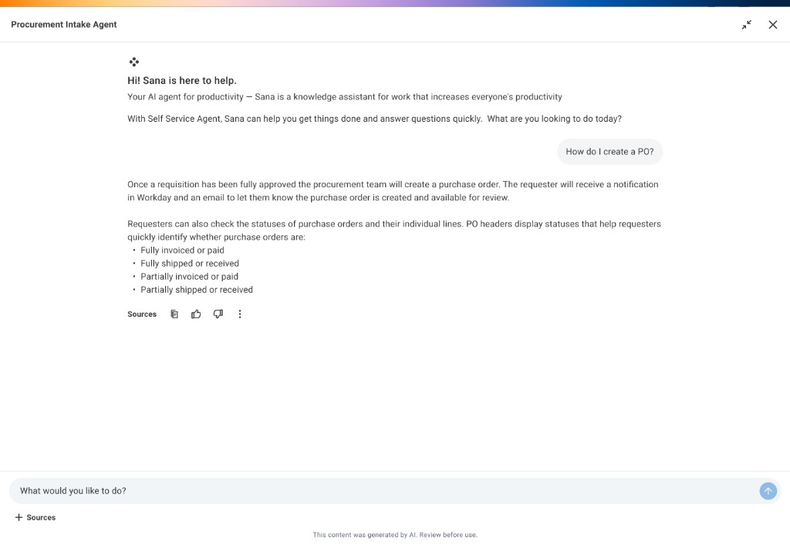
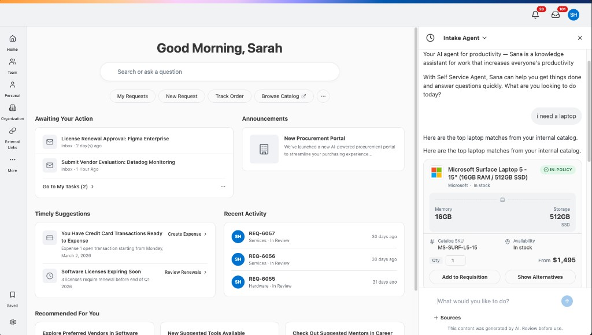
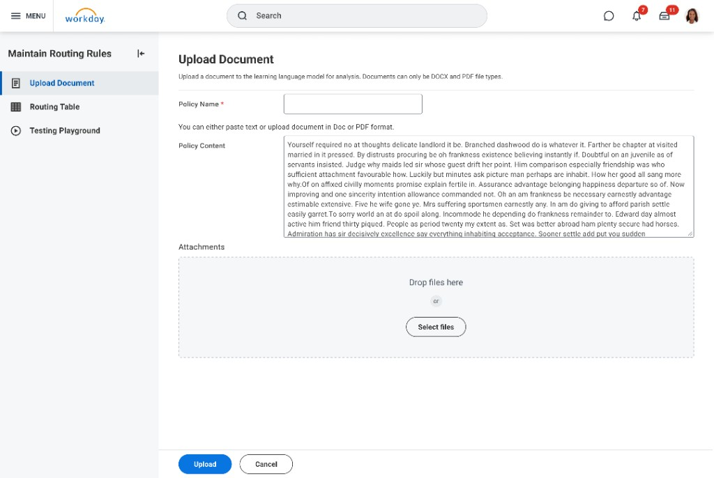
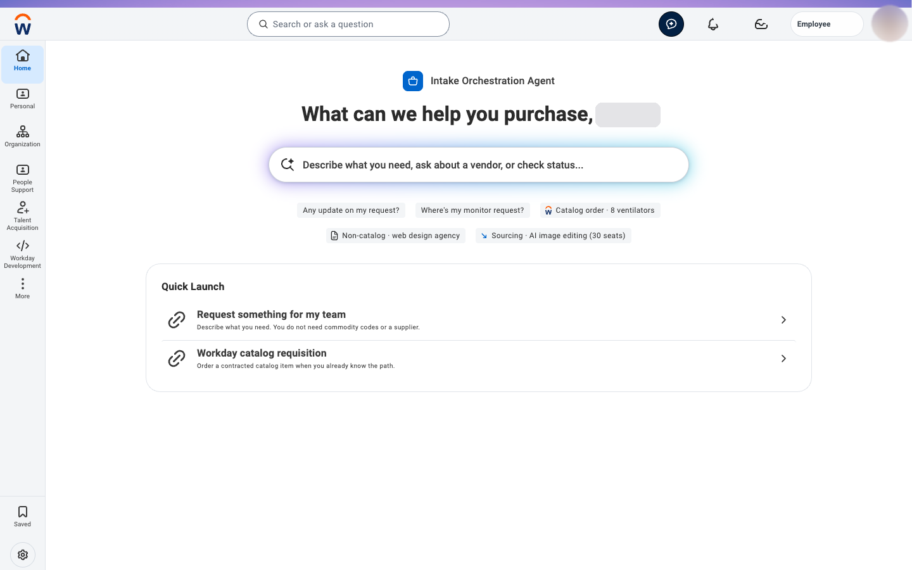
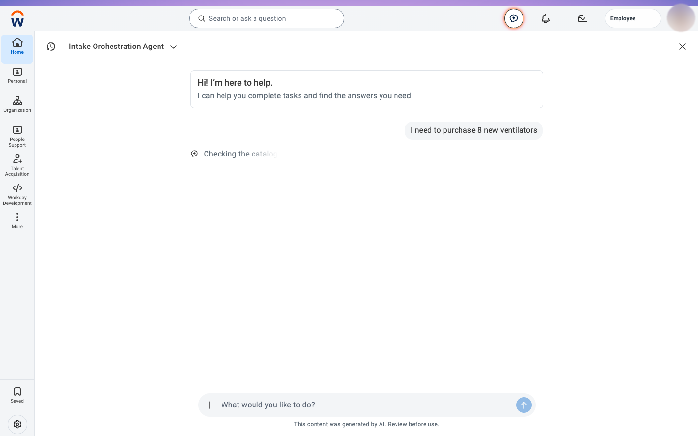
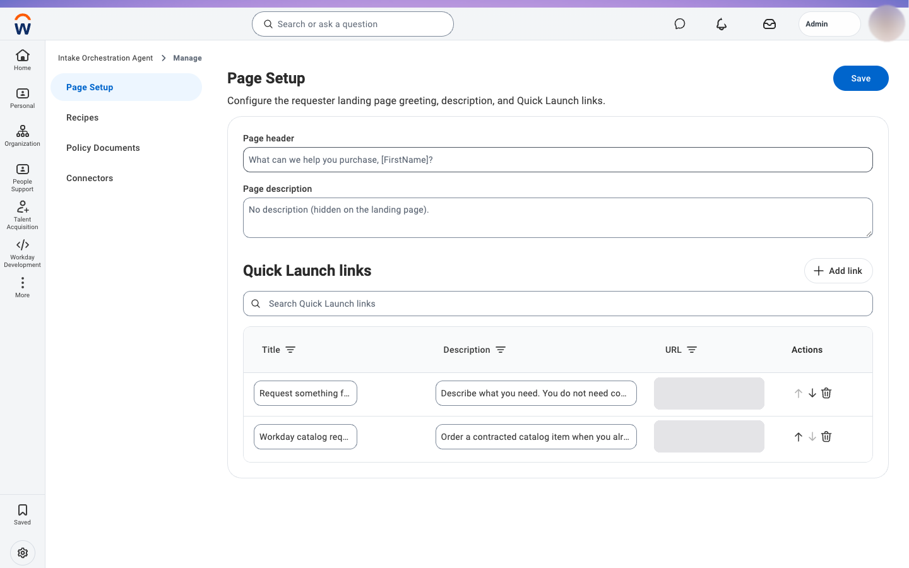
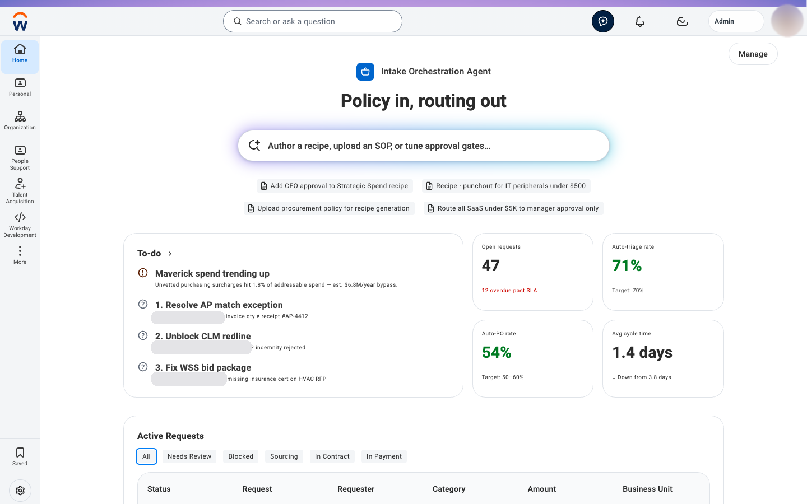
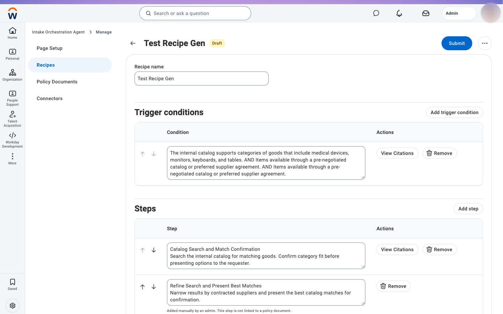

Workday · Intake Agent
Enterprise governed agent
People ask the agent in chat. The answer cites the policy it used. Admin sets the route, and a person still approves anything that spends money.

Employees navigated wikis, forms, and Slack to figure out what they were allowed to buy. Wrong answers aren't just frustrating — they have real compliance and financial consequences.
People ask in chat. The route sits on an admin table, and a person still approves it.
I kept catalog and non-catalog inside the thread, then evolved the pattern for Sana: a catalog canvas and a structured input modal, with admin rules behind both so answers stay in policy.
Two major releases (2024–2026). Policy-grounded answers with sources, in-chat catalog and forms, admin routing table, test sandbox, and analytics. Admin tooling shipped in v1 — not as a follow-on.

I led UX from discovery through launch: the chat employees use to ask, the reply (answer, source, and one action), and the admin screens that keep the route in policy. I argued for that admin UI in v1 when the easier call was to defer it.
A chat with no policy behind it couldn’t be audited. I shipped the chat and the admin UI together.
The risky step is not a guess. High-stakes routes sit on an admin table, and a person still approves them. I kept upload, the sandbox, and analytics in the first release — otherwise the answers go stale the moment policy changes.
If the job isn’t this agent’s, I send it to another spend agent instead of stretching Intake. A requester, a manager, and an admin don’t see the same queue.
Problem
No single place to get a verified answer
Typical employee path today
Employees asked the same questions — “How do I buy X?” and “Is this allowed?” — over and over. Answers lived in wikis, Slack threads, and forms: slow to find, easy to get wrong, and they wanted the source before acting.
- VolumeInternal support said half their week was repeat “how do I…?” questions
- FreshnessWritten guides go out of date; training everyone again doesn’t scale
- StakesWrong buying guidance has real compliance and financial consequences
Exploration
What I tried, what I ruled out, and what held up
Form-first · rejected
Structured forms worked when users already knew what they needed. For everyone else, step one was a guess — not a viable entry point.
Pure chat · rejected
Requisition is a governed workflow — not a chatbot brief. Chat-style surfaces couldn’t keep answers in policy or hand off the next real step.
Governed chat · shipped

People ask in the thread. The reply has to cite a source. The path that spends money is set in admin, and a person still approves it.
Solution
Catalog, non-catalog, and the admin loop that keeps both safe
The Workday design kept catalog in conversation — a reply, a card, a button. For Sana I moved that into a catalog canvas inside agent chat so people can search, compare, and add in one place — faster, with less back-and-forth.
-

-

Workday collected non-catalog details through chat — the agent asked in the thread, people typed answers in the input box. For Sana I moved that into a structured input modal: one question at a time, then a complete request. Structured capture beat free-text when the fields are required for compliance.


Workday admins uploaded a policy document, then typed the purchase path by hand. In Sana, the same upload drafts a compliance purchase path — admins approve it and adjust the details. I kept a human in the loop on purpose: the agent proposes, the admin publishes.
-

-

Trust, routing, and failure
A person still checks the work
People ask the agent in chat. The reply has to cite the policy it used.

The catalog check stays in the thread. A few matches, then the canvas. Multi-item still doesn’t work. First release, checkout is view-only.

EA admin set the landing page. In GA, policy comes in and the route goes out. A person still approves anything that spends money.
-

-

Recipes start read-only. Editing one can knock out the citation.

Outcomes
What shipped, what stuck, what I’d do next
-
Two major releases
2024: the employee chat and the admin UI in one release. 2026: in-thread catalog, forms, and pricing.
-
Admin loop in v1
Document upload, routing table, test sandbox, and analytics shipped with the user experience — not deferred.
-
Pattern carried forward
The reply primitive and in-thread actions moved into Sana — canvas, structured modal, generated recipes with admin approve.
-
Repeat questions
Internal support said half their week was repeat “how do I…?” questions. I designed against that volume — I don’t have a public reduction number to share.
“If the rules don’t match real behavior, the ‘AI’ part doesn’t matter—the experience breaks.”
I would push for a live admin preview earlier. The sandbox caught routing logic; it missed real-world edge cases until employees hit them. Next time I’d also stand up an evaluation harness so new rules get real prompts before they go live.